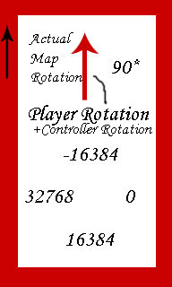
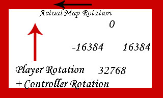

MythOpus/Developer Journal
I've decided on a general theme for this thing. I've thrown aside magic and monster creatures trying to destroy the world with evil powers in favor of a less common approach. NINJAS! I'm just hoping it won't be over the top lame ninjas, so I'll try extra hard to make it 'cool'.
With this decision made I've had to make a few changes to the code, which started with placeholders. Ninjas don't need magic or magic experience levels or spells... they've got uber skill and knives. I also started to fiddle with the movement system once more even though go it to work the way I wanted it to. I tried adding a wall strafing system. In theory, it would work like this...
The player walks up to a wall. If the player walks into the wall, the players character will lean its back against the wall and you can then move (slowly) against the wall in a similar fashion to the Metal Gear series. This tactic would be useful for getting past heavilly armed guards when there is very little light and could be used as a scare tactic on guards in rooms with pillars every where. Anyways, here is how those changes went.
BOOM!
They didn't work.
I don't quite understand why I'm having so many problems. I'm pretty sure I understand the vector and rotator business so that hopefully isn't the issue. I started to test some things out before I worked heavilly on getting it to work the way I want it to. This required me to strip/trim the existing movement code up a bit so now instead of just setting the rotation of the pawn, I am also setting a custom enum. So when the player is moving forward, the enum will tell you that its moving forward etc. This wasn't the difficult part.
However, then I started to test World Collision things though. I thought that the HitWall event might help me determine if the Pawn is hitting a wall (at which point the wall grab will occur) but this didn't work at all.
Then I attempted to use a FastTrace (albeit with some theoretical variables that I was guessing would work) and that gave extremely odd results. In my test map, I have a room of pillars (just rectangles that reach from top to bottom of the room) and the FastTrace would only show a collision with the left and front of -some- pillars. After fiddling with this to no avail, I tried an actual trace which gave similar results. Also, when the pawn would collide, I had a little piece of code that added 180 degrees to the direction of the pawn (for the huddle against the wall) and this only inverted my movement keys similarly to the problems I was having before with the movement system.
Dalin, is not a happy programmer right now and he has a Calculus Final tomorrow morning. At least the UE Goblin won't be able to ruin that for me.
Edit: I got the player to 'hug' the wall, minus the animation of course. That will come when most of the code is done. Getting the player to move along the wall has proved much more difficult though. When the player enters the 'wall hug' mode, I've tried different ways to isolate the directions of movement but nothing works so far the way I want it to. I can get the player to run up to a wall and then turn around and 'hug' it, but then in that state I only want the player to be able to move forward which will get him to stop hugging the wall, or be able to move across the surface of the wall while still looking in the forward direction. I.E. The player will strafe across the wall. This has proved hard to implement then I realized. For one, I can't seem to lock the player into the 'wall hug' state properly, and for two, I can't seem to get the player to move across the wall without screwing up my movement axis'. Hopefully doing a semi-rewrite will help me work the kinks out.
Ambershee: You could try creating volumes over walls, and when the player enters them, press up against them, rather than trying to detect walls themselves?
MythOpus: While a good idea, I don't want the mapper to have to do a lot of extra things to make the mod work as needed. I did thinkof a solution though... while early in the morning of course. I am going to check the location of the pawns location against the location of the pawn a second or so prior. If they are the same then I will work some magic and get the player to look like he's hugging the wall.
Ambershee:A viable solution, I guess. However what happens if the level designer wants to prevent a player from being able to hug certain walls or surfaces, or a certain wall or surface isn't a brush, but perhaps a mesh or something?
MythOpus:Well to answer you question about what happens if its not a brush... the system will work the same way. I didn't really explain it well before but here's what I've done. When a player moves somewhere, their rotation changes as well as their acceleration. They accelerate in the direction that they're facing. Because the acceleration of an object can be greater than 0 while the velocity of that object can remain 0, i.e. the object is being stopped by something, I can do the following.
if( ( ( Pawn.Acceleration.X > 1 ) || ( Pawn.Acceleration.Y > 1 ) || ( Pawn.Acceleration.X < 1 ) || ( Pawn.Acceleration.Y < 1 )) && ( Pawn.Location == OldLocation ) ) { //Do wall hugging stuff here }
OldLocation is basically just the previous location of the player when he last tried to move. First we check to see if the player is trying to move in any direction (except for the Z direction because this is a top down rpg and you don't really need to wall hug while falling or jumping) and if thats true then we check to see if the players new location is the same as their previous location, that is to say their velocity is 0. This means for the most part that the player is trying to move but can't, so we can assume that they are trying to move against a wall or pillar, or some other brush or mesh. That won't be the case all of the time of course but you can add/minus stuff to solve any problems.
Note: The check to see if there is any acceleration taking place could probably do with some changing but I didn't know how to check to see if there was any acceleration in any direction otherwise.
To answer you question about the mapper not wanting to allow the player to hug the wall, I'm sure I could use the volume idea as I don't believe there would be any maps where the player wouldn't be able to do this. The only situation where I can see this would be needed is if the mapper had a large vat of boiling lava and didn't want the player getting burnt though. Other than a volume, a trace to a walls surface to get the texture or to a mesh could be used. The information we would get would be checked in some list of 'textures and meshes that you cannot wall hug on' that would be supplied by an in map 'info' actor where the mapper could specify I suppose.
I haven't really added anything lately. I just implemented a diagonal movement system... nothing major or awe inspiring. I still haven't come up with a concept for this yet though. A techy-ish RPG would probably be the easiest to pull off but I don't want this to become a horrible clone of Alien Swarm. I've prettied up my test map and added an elevator/transit train to test out how my camera settings would react to the player changing z-axis location. I think it should be fine as long as the camera stays within the boundaries of the map. I don't want it to be doing stupid things like not rendering certain objects. Thats pretty much it for now.
I decided I had enough with the mouse problems. My fault. I thought using some 'open source' mousing code would be easilly made to work. Its either a problem with the way I coded it, or as its suggested, not meant to be used with UT2004 as it was written for an engine pre-UT2004 and the measurements and values used may be vastly different. And so, what we have here is a mouse that won't move properly.
Its not all bad news though. I decided to revert back to my old plan of forcing the player to only move in one of four directs, them being up, down, left, right. The reasons I avoided this was because of bugs in the code and I believed to make the bugs go away, I would have to overite the PlayerWalking state, and I despise states.
However, I had to overwrite the player walking state for the mouse code so I thought why not. The overriding is working but not without its problems. The pawn, for some reason or another keeps reverting back its starting rotation (360 or 0 degrees) and I've been trying to track down why unsuccesfully. I will have to burn some code to find out the source of my problems I fear.
Update: Victory. The problem with the movement code was my fault. Problem with the logic to be precise. I check for any movement on the x or y axis and if there isn't, I don't change the rotation. The problem was that the Acceleration of the player was being decided outside of the if statement 'family' and when it converted the Rotator to the Vector and multiplied it by the players ground speed, it will give a vector with an actual value (because rotator conversions to vectors give a vector with a length of 1 or something to that effect) and then the new acceleration was passed off to some other functions to be used with. Long story short, problem fixed and now its just about getting a hud, new enemy interaction code, a new weapons set ala Zelda, levels, art erm... actually.. I may have a while to go.
I officially hate vectors. At every example I've seen, getting the distance from one vector to another to done with:
VSize(VectorA - VectorB); //or VSize(VectorB - VectorA);
I want to use VSize as for some reason my players location will never equal the location I want it to move to so I have to make it move as close as possible to that location. Two things aren't happening the way I thought they would.
- It seems to be calculating the length of the vector from the origin. From what I remember from Physics, that can lead to complications.
- The 'distance' from Pawn.Location to TargetLocation (where the player wants to go) is never usually less than 256 even if the pawn is right on that spot.
If I don't get an answer to this soon I'm going to move to a less desireable but a million times less stressful solution. I will place an invisible actor where the player wants to go, get the pawn to go in that general direction at whatever speed and when it collides with the invisible actors collion radius, it will stop the pawn. I'm not exactly thrilled about this method though, and it may complicate things if I decide I want to make it a massively multiplayer online roleplaying game, instead of just a roleplaying game.
Edit: I did a quick implementation of the above idea, to spawn an actor that will stop the pawn when it gets into its collision radius. I extended it from Actor and forgot to set bHidden to true, and I've learnt something quite odd because of it. The reason why VSize appears to be being calculated from the Origin of the Level is because the TargetLocation is being set wrong... This, is going to be fun.
I've recently decided that movement keys are the stupidest things ever... So I'm not going to have them anymore. Instead, the game I'm working on will be almost entirely mouse driven. This for some reason seems to make my job of even getting the basic movement system done that much more complicated. What I have now (that isn't working) is fairly straight forward. Player clicks the mouse somewhere on the map, the players 'avatar' will move to that position and stuff. Whats happening now is that the avatar will move towards the place where the player clicked the mouse, but it will just keep walking. I'm going to have to look at some AI code to figure this out I think.
I've recently decided to pick up UnrealScript again after a very long absence of anything programming/scripting related (excluding php). I hoped to refresh my memory on everything UnrealScript in time for the roll out of UT07 (not that I think its going to be worth buying)... and I've already made some forrays into game design that I couldn't do before. The first of these is mouse/cursor support. Thanks to the Mouse Code from UDN I now have a lovely mouse in game, and with a few lovely changes here and there, I have a player finally following the mouse.
This was not without its challenges though. Right now the design idea for this gametype I'm working on is that of an RPG, a top-down perspective one much like Zelda (the originals ie. super nintendo, game boy etc.). I attempted first to lock the rotation of the Players view which was pretty simple. To do this I created a custom Player Controller and overrided the CalcFirstPersonView and CalcBehindView functions. Something like this:
function CalcFirstPersonView( out vector CameraLocation, out rotator CameraRotation ) { CameraLocation.Z = Pawn.Location.Z + 640; //Get the player view above the player CameraRotation.Pitch = -16384; //Pitch the camera downward CameraRotation.Yaw=-16384; //This WAS set to 0 but it was changed... you'll hear about that later Pawn.bOwnerNoSee = False; //In First Person View, players can't see their own pawn for various reasons but that doesn't //matter anymore if(Pawn.Weapon != None) //An ungraceful way of dealing with the first person weapon model... I couldn't get it to 'hide' so,... DESTROY Pawn.Weapon.Destroy(); }
This worked... for awhile. Until I realized an error on my part. After this I started work on the actual movement of the pawn. It... was stressful. I looked at the UpdateRotation function as it was suggested that it would be a good place to override player input. I used code simlilar to the following to catch the input and change the rotation accordingly.
if( aForward > 0) NewRotation.Yaw = SomeValue; else if( aForward < 0) NewRotation.Yaw = TheOppositeOfSomeValue;
There is more to it than that, for example I also checked for any strafing input, but it didn't work the way I wanted it to. In retrospect, it probably would have worked if I would have fixed my Player View problem (that I'll explain later) but the code I have now is much better I think. I wanted the player movement to be fairly simple. "Up" goes up. "Down" goes down. "Strafe Left" or "Left" goes left. "Strafe Right" or "Right" goes right, just like in most Top-down rpgs. But as I said, it didn't quite work out. At first the forward and reverse directions were okay, but then the left and right directions gave the same results as the forward and reverse, ie. Right went down, Left went up. Changing the angle the player would rotate too only further confused me. I gave up on that for awhile and looked at other options for player movement. I finally found some decent mouse code from UDN, plugged it in and messed with it until it worked as I wanted it to. The source code for the mouse in a 3d space only contained the code for the position of the mouse so I had to mess with it until I could convert the location into a rotation succesfully. Even this gave me troubles though. At first I believed it to be a problem with converting a vector to a rotator. While this may have contributed to the fact that the players rotation never matched up with the mouse, it was not the main problem.
The main problem was that my player view's yaw was wrong. I made some lovely images to clarify.

Figure 1 
Figure 2 |
Figure 2 is where it was all wrong. The map I use for testing purpses is a single vertical room not a horizantal room and my player view was set to make it look like it was actually horiztonal. This played havok with my rotation and caused a lot of things. After I fixed this, everything miracoulously fell into place. Anyways...
Currently I have a player that goes forwards and backwards and rotates in the direction of the mouse. This behaviour may change (I may revert to only having 4 directional movement) but it seems to work for now. All I need to figure is how to add strafing into the movement of the player.